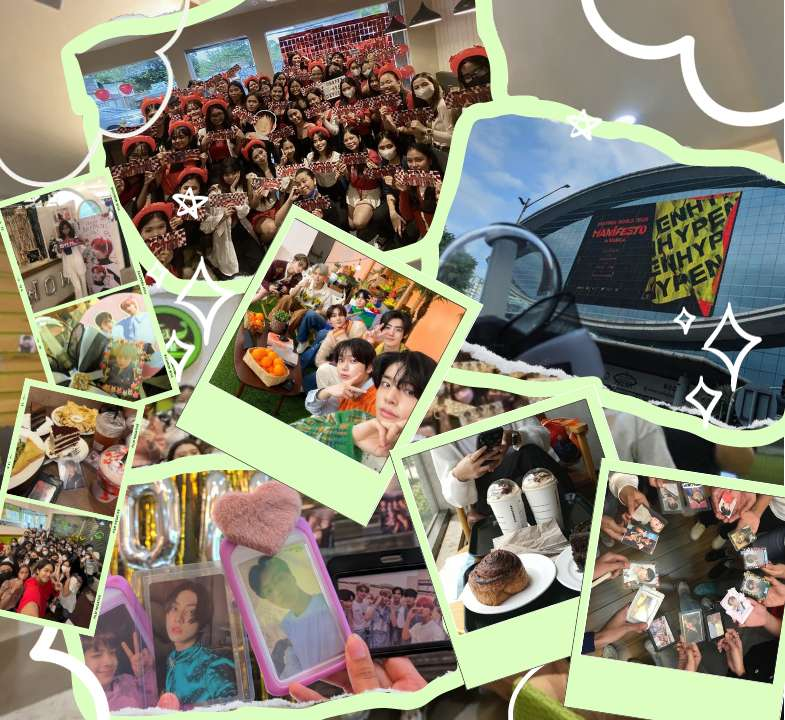

FREE TIME
My hobbies are watching movies, kdrama, reading books while listening to music. I also love doing makeups if I have free time. I also play mobile games whenever I have free time or whenever I feel stress. Furthermore, I enjoy having coffee with my friends and catching up on current events.


COMFORT
One of my favorite hobbies is watching Kpop. I am consistently around at kpop-related events. It provides me with more opportunities to travel and meet new people in my life. Enhypen is one of my life's motivations, mentally, academically, emotionally, and physically. When I'm unhappy or need anything to clear my thoughts, I just watch their contents to lighten my mood, which is why I consider them to be my comfort, home, life line, and safe haven.